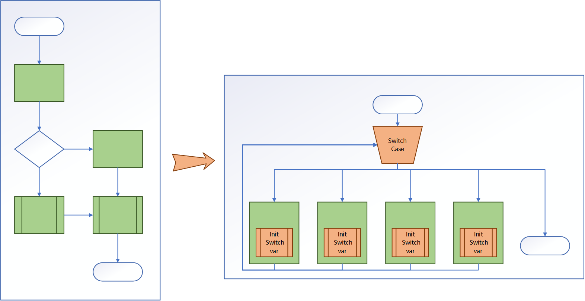

Code flattening
General description
The core obfuscation technique consists in making the code difficult to understand and then to reverse.
The obfuscation techniques applied by KOP4J is the code flattening.
It consists in transforming all functions bodies into large switch statements.
Each basic block is put into a single switch case.

This transformation hugely impact size (2 times) and performance (+40% on execution time)
Security note
Security
With opaque predicate the control flow graph is difficult to reverse
This protection has huge impact on size
Protection Configuration
Code flattening is a global protection, then disabled by default.
The flattening can be enabled or disabled on a sub part.
- Command to enable :
-kop-flatten,enable <classic designator>or-kop-flatten, <classic designator> - Command to disable :
-kop-flatten,disable <classic designator>
The order of commands is important when enabling/disabling flattening.
For example:
-kop-flatten,enable class package.name.Main { public static void main(...); }
disables flattening on all methods except the method package.name.Main.main,
but the following
-kop-flatten,enable class package.name.Main { public static void main(...); }
-kop-flatten,disable class ** { *; }
disables flattening on ALL methods (the second line would override the first one).